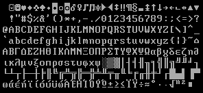
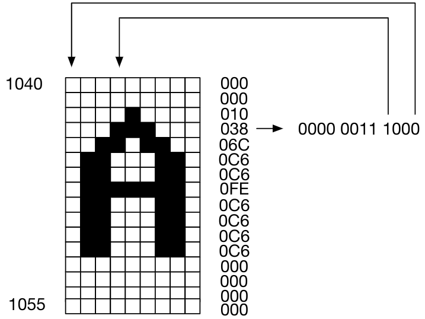
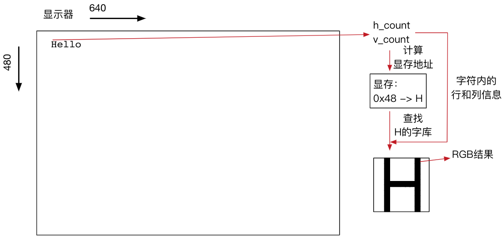

实验九 字符输入界面
第一代计算机的输入，靠的不过是美化了的打字机键盘，其输出则靠高速印刷或直观显示。哈尔在必要时也可以做这些，但他和同舟共济的人们打交道大多数时间是通过说话。
— 《2001：太空奥德赛》， 阿瑟.克拉克
本实验将利用前面实现过的键盘和显示器功能来搭建一个简单的字符输入界面，通过该系统的实现深入理解多个模块之间的交互和接口的设计。
字符显示
从之前的VGA图片显示实验，我们体会到图形界面需要大量的资源支持，在FPGA上实现高精度、高分辨率的图形界面在资源上有些捉襟见肘。但是，FPGA上的资源比几十年前的第一代PC机要丰富许多。用FPGA来实现一个简单的字符输入和显示界面并不难。
字符显示界面只在屏幕上显示ASCII字符，其所需的资源比较少。首先，ASCII字符用7bit表示，共128个字符。大部分情况下，我们会用8bit来表示单个字符，所以一般系统会预留256个字符。我们可以在系统中预先存储这256个字符的字模点阵，如图 fig-ascii 所示。

ASCII字符字模
这里每个字符高为16个点，宽为9个点。因此单个字符可以用16个9bit数来表示，每个9bit数代表字符的一行，对应的点为 1 时显示白色，为 0 时显示黑色。因此，我们只需要 \(256\times 16 \times 9 \approx 37\) kbit的空间即可存储整个点阵。同学们可以自己用高级语言生成点阵存储文件。我们也提供了可通过$readmemh语句读取的 点阵文本文件 ，其中每3个16进制数(共12bit)表示单个字符的一行，该行的9个点中的最左边点在12bit中的最低位（ 请注意高低位顺序 ），然后依次类推，最高的3个bit始终为0。每个字符16行，共256个字符。
例如，ASCII字符 A 的编码是41h（十进制65）。因此其字模对应的地址是 \(16\times65=1040\) （文本文件起始从1行开始，因此在第1041行）。以A字符的第4行为例，文件中存储的是038h，二进制对应是0000 0011 1000。最低位为0，所以左边第一个像素为0，左起第4到第6个像素为1。如图 fig-chara 所示，此处为方便显示颜色是黑白颠倒的。

字模 A 与存储器的关系
有了字符点阵后，系统就不再需要记录屏幕上每个点的颜色信息了，只需要记录屏幕上显示的ASCII字符即可。在显示时，根据当前屏幕位置，确定应该显示那个字符，再查找对应的字符点阵即可完成显示。对于 \(640\times 480\) 的屏幕，可以显示30行（ \(30\times 16=480\) ），70列（ \(70\times 9=630\) ）的ASCII字符。系统的显存只需要 \(30\times70\) 大小，每单元存储8bit的ASCII字符即可。这样，我们的字符显存只需要2.1kByte，加上点阵的6.144kByte，总共只需要不到10kByte的存储，FPGA片上的存储足够实现了。
系统设计
扫描显示
我们之前已经实现了VGA控制模块，该模块可以输出当前扫描到的行和列的位置信息，我们只需要稍加改动，即可让其输出当前扫描的位置对应 \(30\times 70\) 字符阵列的坐标( \(0\leq x \leq 69\) , \(0\leq y\leq 29\) )。利用该坐标，我们可以查询字符显存，获取对应字符的ASCII编码。利用ASCII编码，我们可以查询对应的点阵ROM，再根据扫描线的行和列信息，可以知道当前扫描到的是字符内的哪个点。这时，可以根据该点对应的bit是1还是0，选择输出白色还是黑色。

字符显示流程示意图
我们将显示的过程总结如下：
根据当前扫描位置，获取对应的字符的x,y坐标，以及扫描到单个字符点阵内的行列信息
根据字符的x,y坐标，查询字符显存，获取对应ASCII编码
根据ASCII编码和字符内的行信息，查询点阵ROM，获取对应行的9bit数据
根据字符内的列信息，取出对应的bit，并根据该bit设置颜色。此处可以显示黑底白字或其他彩色字符，只需要按自己的需求分别设置背景颜色和字符颜色即可。
由于VGA的扫描频率是25MHz，每个点扫过的时间非常短。因此，在扫过一个点的时间内要完成这一系列操作需要仔细地设计时序。首先，FPGA在这么短的时间内是很难完成乘除法的。因此，设计时要合理选择存储器的大小和寻址方式，将地址计算简化为简单的计数和逻辑操作。其次，对每个点我们要查询多个存储器，每个存储器的查询方式需要合理设计：是采用RAM还是ROM？是上升沿读出还是下降沿读出？这些都有可能影响系统最终的性能。存在性能问题的显示有可能会出现彩色边缘或者模糊的现象，这些都说明系统实现上存在潜在问题。
不要使用寄存器来实现大容量存储
如果用寄存器来实现所需的存储器，而不用片上的M10K或MLAB，则有可能会占用大量资源，造成FPGA资源紧张，编译时间大大增加。
显存读写
对于键盘输入，我们可以复用之前实现的键盘控制器。在键盘有输入的时候对字符显存进行改写，将按键对应的ASCII码写入显存的合适位置，这样输入就可以直接反馈到屏幕上了。
注意显存的读写
存储ASCII码的字符显存会经常被VGA扫描模块高速读取，而键盘模块需要对显存进行写入，需要注意两者的协调。
实验验收内容
上板验收: 实现字符交互界面
实现一个可以用键盘输入，并在VGA显示器上回显的交互界面。界面实现要求可以参考DOS字符界面，Window命令行或Linux的字符终端。
支持所有小写英文字母和数字输入，以及不用Shift即可输入的符号。
一直按压某个键时，重复输出该字符。
输入至行尾后自动换行，输入回车也换行。
可选扩展要求（只需要完成五种以上即可满分）
可以显示光标，建议可以用显示闪烁的竖线或横线作为光标。
支持BackSpace键删除光标前的字符。
BackSpace删除至本行开始后，再按BackSpace可以删除回车键，光标停留在上一行末尾的非空字符后。
支持自动滚屏，即输入到最后一行后回车出现新空白行，并且所有已输入的行自动上移一行。
支持Shift键以及大小写字符输入。
支持方向键移动光标。
在行首显示命令提示符。
更酷炫的效果
感兴趣的同学还可以考虑如何实现彩色字符、绘制ASCII艺术图或实现类似Matrix开头的字符雨效果。
最低要求
本实验有一定难度，最低完成要求是能够在显示器上显示预先设定好的字符，但 仅满足最低要求无法获得全部分数 。
在线测试
简单图灵机实现